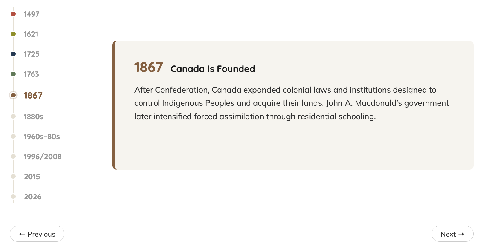
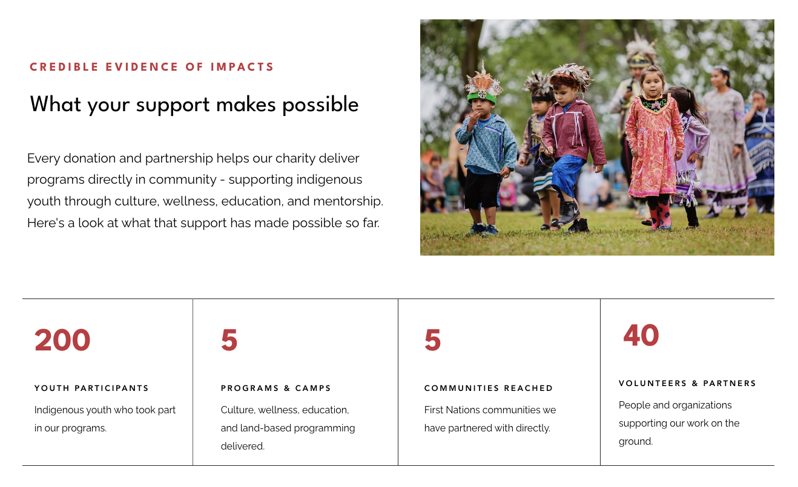

Project Challenge & Solution
Turtle Island Charity's website relied on text, which made its mandate and engagement opportunities difficult to find. The client wanted a professional, approachable redesign with real community imagery and content that is easy to scan.
Our consulting team divided the redesign by page and I redesigned two pages:
- Reconciliation Mandate: a concise mandate summary, an interactive timeline of ten key events (1497-2026), and a closing call-to-action section.
- ReconciliACTION: four ways to support the charity, financial and non-financial contribution sections, impact statistics, and a "Community Voices" testimonial carousel.


Results & Key Outcomes
- Launched on schedule: the redesigned website went live at the final client meeting, fully optimized for desktop and mobile.
- Refined through client feedback: the Reconciliation Mandate & ReconciliACTION pages went through three iterations, shaped by bi-weekly client meetings.
- Delivered complete project documentation: research-based design recommendations, a consolidated report of every prototype version with summaries of the design changes, and two Gantt charts comparing the original and final timelines.